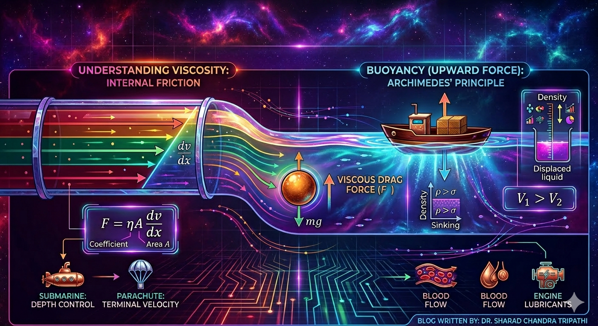

Viscosity and Buoyancy

Image generated by Google AI
Have you ever wondered why honey flows more slowly than water? Or why a ball dropped in oil sinks more slowly than in air? The answer lies in a property called viscosity. And when you think of floating objects or things submerged in water, that is where buoyancy comes in.
These two concepts, viscosity and buoyancy, are crucial in fluid mechanics and have real-life applications, from designing submarines to understanding blood flow in veins. Let us dive in.
What is Viscosity?
Viscosity is a measure of a fluid’s resistance to flow. Simply put, it is how “thick” or “sticky” a fluid is. Honey, oil, and glycerin have high viscosity. Water and air have low viscosity.
If a fluid flows easily, it has low viscosity. If it flows slowly, it has high viscosity.
Why does this happen?
Because in fluids, different layers slide over each other when the fluid flows. Viscosity is the internal friction between these layers.
Viscous Force
When a fluid flows over a surface or within itself, a force opposes this motion. This is called the viscous force.
Imagine two parallel layers of a fluid, one moving faster than the other. The layer below resists the motion of the one above, much like friction.
Mathematically, viscous force \( F \) is given by:
\[ F = \eta A \frac{dv}{dx} \]
Where:
- \( \eta \) is the coefficient of viscosity
- \( A \) is the area of the layer
- \( \frac{dv}{dx} \) is the velocity gradient (rate of change of velocity with distance)
Unit of viscosity: \( \text{Pa} \cdot \text{s} \) or \( \text{N} \cdot \text{s/m}^2 \)
CGS unit: Poise, where \( 1 \, \text{Pa} \cdot \text{s} = 10 \, \text{Poise} \)
Types of Fluids
- Ideal Fluid: No viscosity (purely theoretical)
- Real Fluid: Has viscosity
- Newtonian Fluid: Obeys Newton’s law of viscosity (e.g., water, air)
- Non-Newtonian Fluid: Does not obey Newton’s law (e.g., ketchup, blood)
Stoke's Law: Drag on a Sphere
Ever seen a ball falling in oil? It moves slowly because of viscous drag.
When a sphere moves through a viscous fluid, it experiences a resisting force given by:
\[ F = 6 \pi \eta r v \]
- \( \eta \) = viscosity of the fluid
- \( r \) = radius of the sphere
- \( v \) = velocity of the sphere
This law is valid for small spherical objects moving slowly (laminar flow).
Terminal Velocity
As an object falls through a fluid, it speeds up until the net force becomes zero. At this point, it moves with constant speed. This is called terminal velocity.
For a sphere of radius \( r \), terminal velocity \( v_t \) is:
\[ v_t = \frac{2r^2(\rho - \sigma)g}{9\eta} \]
- \( \rho \) = density of the sphere
- \( \sigma \) = density of fluid
- \( g \) = acceleration due to gravity
- \( \eta \) = viscosity of fluid
So, if the object is denser than the fluid, it sinks. If lighter, it floats.
Buoyancy: The Upward Force
Have you ever felt lighter in a swimming pool? That is because of buoyancy, the upward force exerted by a fluid on any object placed in it.
This concept was first explained by Archimedes over 2000 years ago.
Archimedes’ Principle:
When a body is immersed in a fluid, it experiences an upward force equal to the weight of the fluid displaced.
\[ F_B = \text{Weight of displaced fluid} = \sigma V g \]
- \( \sigma \) = density of fluid
- \( V \) = volume of fluid displaced
- \( g \) = acceleration due to gravity
Apparent Weight
\[ \text{Apparent weight} = \text{Actual weight} - \text{Buoyant force} \]
Conditions for Floating and Sinking
- If \( \rho < \sigma \): The object floats.
- If \( \rho > \sigma \): The object sinks.
- If \( \rho = \sigma \): The object remains suspended.
Viscosity and Temperature
- For liquids: Viscosity decreases with temperature.
- For gases: Viscosity increases with temperature.
That is why hot honey flows faster than cold honey.
Reynolds Number: Laminar vs Turbulent Flow
We use the Reynolds number \( Re \):
\[ Re = \frac{\rho v D}{\eta} \]
- \( \rho \) = density of fluid
- \( v \) = velocity
- \( D \) = characteristic length
- \( \eta \) = viscosity
Critical values:
- \( Re < 2000 \): Laminar flow (smooth)
- \( Re > 3000 \): Turbulent flow (chaotic)
- In between: Transitional
Applications in Real Life
- Designing vehicles to reduce drag
- Blood flow in arteries (blood is a non-Newtonian fluid)
- Oil and lubricant selection in engines
- Designing parachutes and air-drops
Shortcut Concepts
- Viscosity is internal friction in fluids.
- Viscous force: \( F = \eta A \frac{dv}{dx} \)
- Stoke’s Law: \( F = 6\pi \eta r v \)
- Terminal velocity: \( v_t = \frac{2r^2(\rho - \sigma)g}{9\eta} \)
- Buoyant force: \( F_B = \sigma V g \)
- Apparent weight = Actual weight - Buoyancy
- Reynolds number decides flow type: Laminar or Turbulent
Quick Review Questions
- What happens to viscosity of a liquid when it is heated?
It decreases. - A ball falls slowly in glycerin. What force is acting against gravity?
Viscous drag force and buoyant force. - Why do objects feel lighter in water?
Because of the upward buoyant force. - Which has higher viscosity: water or honey?
Honey. - What does Reynolds number signify?
It tells us whether fluid flow is laminar or turbulent.
Previous Year Question (PYQ)
Q.1
The diameter of an air bubble which was initially \(2 \, \text{mm}\), rises steadily through a solution of density \(1750 \, \text{kg/m}^3\) at the rate of \(0.35 \, \text{cm/s}\). The coefficient of viscosity of the solution is ........ poise (to nearest integer).
(The density of air is negligible.) [JEE, 2022]
Solution:
Given values
- Diameter \(D = 2 \, \text{mm}\) ⇒ Radius \(r = 1 \, \text{mm} = 1 \times 10^{-3} \, \text{m}\)
- Terminal velocity \(v = 0.35 \, \text{cm/s} = 0.0035 \, \text{m/s}\)
- Density of solution \( \rho = 1750 \, \text{kg/m}^3 \)
- Density of air is negligible: \( \sigma \approx 0 \)
- Acceleration due to gravity \( g = 9.8 \, \text{m/s}^2 \)
- \( \pi = \frac{22}{7} \)
Use Stoke’s law and buoyant force equilibrium
\[ F_{\text{viscous}} = F_{\text{buoyant}} = V \rho g \]
\[ F = 6\pi \eta r v \quad \text{and} \quad V = \frac{4}{3} \pi r^3 \]
\[ 6\pi \eta r v = \frac{4}{3} \pi r^3 \rho g \]
\[ \eta = \frac{2}{9} r^2 \rho g / v \]
Plug in the values
\[ \eta = \frac{2}{9} \cdot (1 \times 10^{-3})^2 \cdot 1750 \cdot 9.8 / (0.0035) \]
\[ = \frac{2 \cdot 10^{-6} \cdot 1750 \cdot 9.8}{9 \cdot 0.0035} = \frac{34.3 \cdot 10^{-3}}{0.0315} \approx 1.089 \, \text{Ns/m}^2 \]
Convert to poise:
\[ 1 \, \text{Ns/m}^2 = 10 \, \text{poise} \Rightarrow \eta \approx 10.89 \, \text{poise} \]
Answer (nearest integer): \( \boxed{11} \, \text{poise} \)